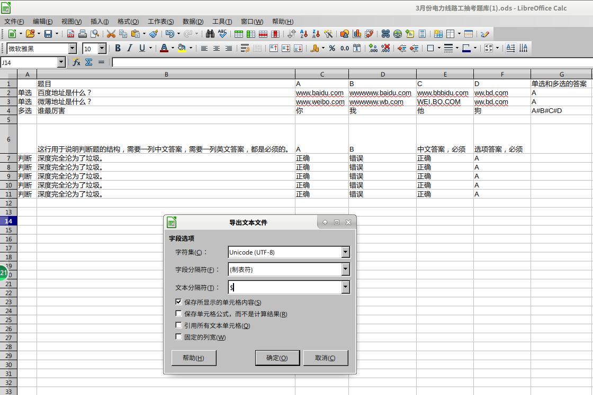

题检——简单的答题软件 19.04.03_23:30:02项目地址：https://github.com/noahsai/QA 因为某些原因，需要一个答题软件来应付单选多选和判断题的考试。虽然最后因为运气不好，这个软件还未出世就轮到我了。 为了将来着想，还是得做这个软件以备不时之需。 如图片所示，功能有： 1.开始做题，能够自定义题目数量; 2.错题重做，将你错的题作为题库，只靠你错的题。错题重做时答对的题目就会从错题中去除。 3.错题集，以题库的形式显示错题。 4.题库，现实所有题目。 5.选择题库，此功能是选择曾经导入过的题库，选取题库的文件夹即可。 6.导入题库，导入指定格式的csv表格文件。 7.管理题库，删去对应的文件夹即可删去该题库。 8.题库和错题集的字体大小调节和夜间模式。
由于我的题库很简单，所以软件不支持带图片的题目，只支持纯文字题目。
关于csv表格文件的格式： csv表格可以用表格软件编辑和生成。我用的libreoffice，见截图。 生存时： 1.单选和多选必须要有7列，判断要有6列。 2.单选题第一列必须包涵“单”字，多选题包涵“多”字，判断题包涵“判字”，不是题目的行就不要包涵这三个字。 3.多选的答案要用#作为分隔。 4.判断题的答案必须是第5列为中文答案，第六列为英文答案。 5.答案的ABCD必须是大写！ 6.导出时“字段分隔符”必须是“制表符”！！，“文本分隔符”必须填$符号（shift+4那个美元符号）
编辑时： 1.打开csv表格文件时，选“分隔”，下面必须只勾选“制表符”一个选项！！文本分隔符填$符号。

|